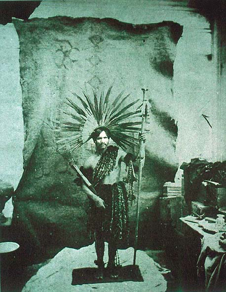

|
|  |
| Marc Ferrez, Dress of the Conibo Caciques of Ucaiale
|
Photography was another of the visual technologies employed in the
fashioning of selves and others as empirically given. Indeed, the
truth-claims immediately attributed to the photographic image from its
very inception, as a means of capturing the real through a
physico-chemical process, obviated the ways in which the camera's
"taking of pictures" was itself already primed on a painterly notion of
seeing as the isolation of a particular fragment of space and and time
(or, the rendering motionless of a place and its contents). At the same
time, photography was a means of visually replicating, and thus
enhancing, European expansionism in the age of Empire, by allowing to
transport, store, and later also replicate, "true images" of natives
and of sites from abroad. Often these pictures allow us to glimpse at
the power-relations involved in their own making, as in the above image
by Brazilian photographer Marc Ferrez, which bespeaks the way in which
photography "staged" images of aborigeneity according to the very
conceptions to which it was subsequently attributed as proof.

|